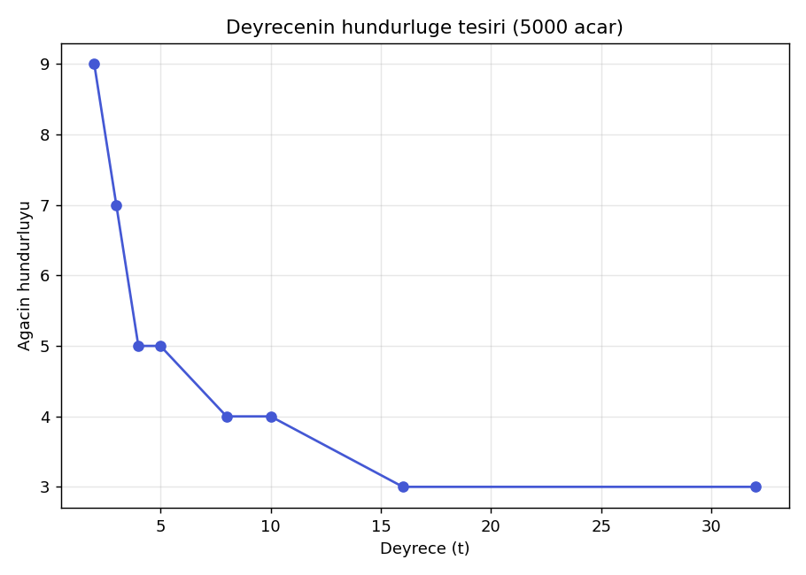
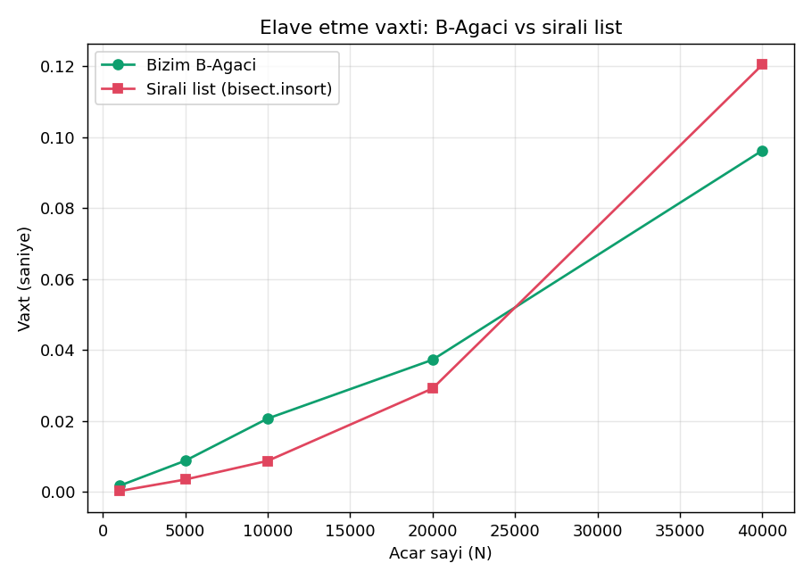
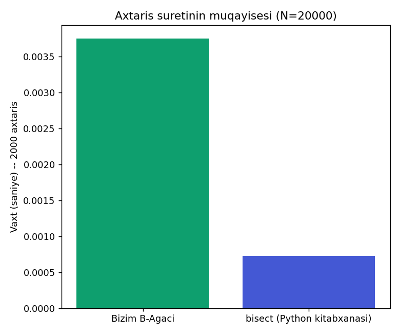

Struktur necə işləyir
Niyə B-Ağacı?
Adi ikili axtarış ağacında (BST) hər node yalnız 1 açar saxlayır. Bu, ağacı çox "hündür" edir — disk üzərində hər node oxunması bir disk I/O əməliyyatı deməkdir, və disk I/O çox bahalıdır.
B-Ağacı bunun əksinə hər node-da bir neçə açar (dərəcə — t parametri ilə tənzimlənir) saxlayır. Bu, ağacı "yastı" və "enli" edir → daha az səviyyə → daha az disk oxunması.
Dərəcə (t) qaydaları
- Hər node-da ən çox 2t − 1 açar
- Hər node-da ən az t − 1 açar (kök istisna)
- Açarlar həmişə artan sırada
- Hər (n+1) açarlı node-un n+1 övladı var
Vaxt Mürəkkəbliyi
n = açar sayı. Hündürlük təxminən logt((n+1)/2) ilə hesablanır — t böyüdükcə hündürlük azalır.
Yaddaş (Space) Mürəkkəbliyi
Hər node ən çox 2t−1 açar + 2t göstərici (pointer) saxlayır. n açar üçün ümumi node sayı O(n/t)-dir, ona görə ümumi yaddaş O(n) qalır — t-dən asılı olmayaraq xətti böyüyür, sadəcə "neçə node-a" bölündüyü dəyişir.
B+ Ağacı — fərq nədədir?
B+ Ağacında bütün dəyərlər yalnız yarpaqlarda saxlanılır, daxili node-lar sadəcə "yol göstərici"dir. Yarpaqlar öz aralarında zəncirlə bağlıdır.
Nəticə: aralıq sorğusu (range query) çox sürətlidir — bir dəfə ilk yarpağı tapdıqdan sonra zəncirlə sağa gedə-gedə bütün aralığı O(k) vaxtında oxuyursan (k = nəticə sayı). Buna görə MySQL, PostgreSQL kimi VBİS-lər B+ Ağacından istifadə edir.
İnteraktiv vizuallaşdırma
Açar əlavə et, axtar və ya sil — kataloq siyirmələrinin necə bölündüyünü canlı izlə.
Bizim realizasiya vs hazır kitabxanalar
| Xüsusiyyət | Bizim B-Ağacı (sıfırdan) | Python bisect + list | C++ std::map (qırmızı-qara ağac) |
|---|---|---|---|
| Node tutumu | Çoxlu açar (dərəcə t) | — (tək sıralı massiv) | 1 açar / node |
| Axtarış | O(logt n) | O(log₂ n) — sürətli binar axtarış | O(log₂ n) |
| Əlavə etmə | O(logt n) | O(n) — massivin ortasına qoymaq baha başa gəlir | O(log₂ n) |
| Disk-üçün uyğunluq | Əla — az səviyyə, az I/O | Uyğun deyil | Çox node, çox I/O |
| Aralıq sorğusu (B+ variantı) | O(log n + k) — yarpaq zənciri ilə | O(log n + k) | O(log n + k) |
| Yaddaş overhead-i | Az (sıx node-lar) | Minimal | Hər node üçün əlavə pointer-lər |
Niyə bisect daha sürətli görünür?
Python-un bisect modulu C dilində yazılıb və yaddaşda ardıcıl (cache-friendly) saxlanılır — kiçik N üçün çox sürətlidir. Amma əlavə etmə zamanı massivin ortasına element qoymaq O(n) tələb edir, böyük N-də bu, B-Ağacından qat-qat geri qalır (benchmark bölməsinə bax).
Niyə real DB-lər B-Ağacı istifadə edir?
Verilənlər bazaları (MySQL, PostgreSQL, SQLite) açarları diskdə saxlayır, RAM-da yox. Hər node oxunması bir disk bloku oxumaq deməkdir. B-Ağacının "geniş, az səviyyəli" forması disk oxunma sayını minimuma endirir — bu, std::map kimi "hündür, nazik" strukturlardan qat-qat üstündür.
Empirik ölçmələr
Aşağıdaki qrafiklər Python skripti ilə əvvəlcədən hazırlanıb. İstəsən, hər testi öz rəqəmlərinlə birbaşa bu səhifədə (brauzerdə) də işlədə bilərsən — heç bir Python lazım deyil.
Test 1 — Dərəcənin (t) hündürlüyə təsiri
5000 təsadüfi açar üçün, t böyüdükcə ağacın hündürlüyü necə azalır:

Nəticə: t = 2-dən t = 32-yə qədər hündürlük kəskin azalır — bu, niyə disk sistemlərinin böyük t (məs. 100+) seçdiyini izah edir.
Test 2 — Miqyas testi (N böyüdükcə vaxt)

Bizim B-Ağacı ilə Python-un bisect.insort (sıralı list-ə əlavə) müqayisəsi. N böyüdükcə fərq aydın görünür.
Test 3 — Axtarış sürəti

20,000 açar üzərində 2000 axtarış əməliyyatının müqayisəsi.
Mühəndislik tövsiyələri
Bu strukturu nə vaxt istifadə etmək lazımdır?
- Fayl sistemləri və verilənlər bazaları — disk-əsaslı saxlama olduğu üçün B/B+ Ağacı standart seçimdir (NTFS, ext4, MySQL InnoDB).
- Tez-tez aralıq sorğusu olan sistemlər (məs. "10-dan 50-yə qədər olan bütün sifarişlər") — B+ Ağacı seçilməlidir.
- Yalnız RAM-da işləyən, kiçik N olan tətbiqlər — Python dict/hash cədvəli və ya bisect daha sadə və kifayət qədər sürətlidir.
- Çox tez-tez yazma/silmə olan amma az oxuma olan ssenarilər — hash cədvəli daha yaxşı seçim ola bilər (B-Ağacı O(log n), hash O(1)).
Layihənin töhfəsi
Bu layihədə B-Ağacı və B+ Ağacı sıfırdan (heç bir hazır kitabxana olmadan) realizə olunub, dərəcənin (t) performansa təsiri empirik ölçülüb, və nəticələr Python-un standart alternativləri ilə müqayisə edilib. Əlavə olaraq, B+ Ağacının yarpaq-zənciri arxitekturası ilə aralıq sorğusu funksionallığı tətbiq edilib.